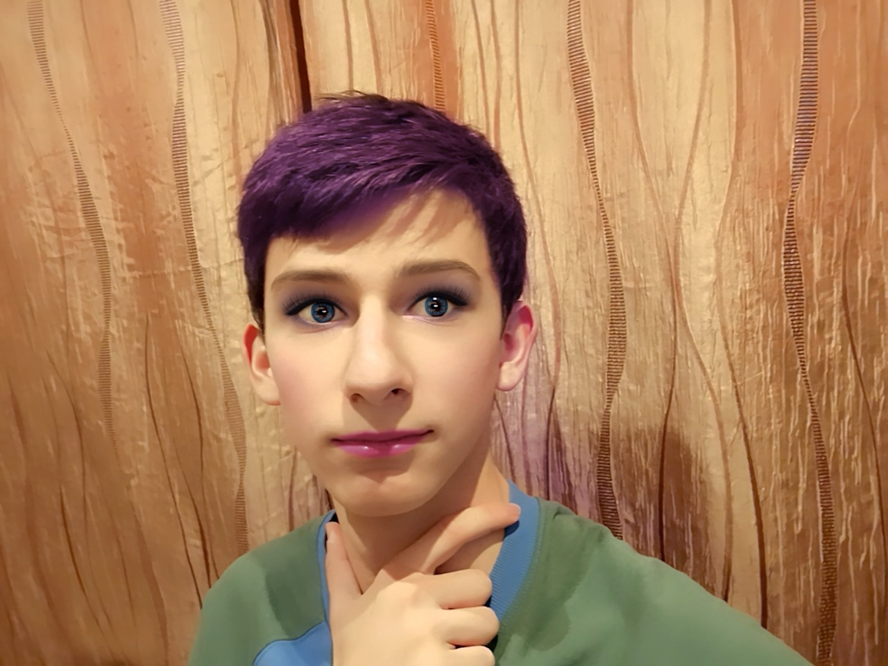
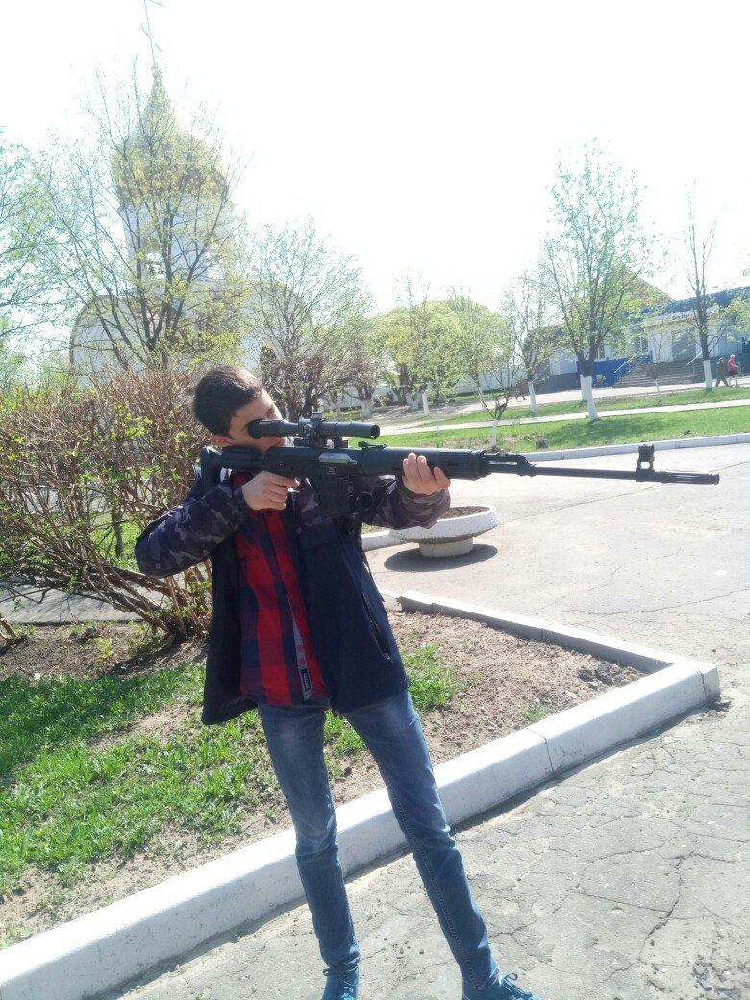

Встреча с Рикардо Милосом в рамках мероприятия «Флексим вместе»
 В декабре 2018 года произошёл пик популярности персонажа Рикардо Милос, который стал известен благодаря серии видео про борьбу в качалке.
В декабре 2018 года произошёл пик популярности персонажа Рикардо Милос, который стал известен благодаря серии видео про борьбу в качалке.
Щелковскому колледжу, а точнее отделениюю СП №3, повезло принять участе в акции «Флексим вместе».
На такое важное событиеи мы отправили на встречу с Рикардо самого главного гея колледжа - Арутра Габриеляна!
Маленький Артур думал что будет флексить ВМЕСТЕ с Рикардо, но тут Артур повернулся и флексить начали его...
Продолжение без смс и регистрации в подробнее!
Скидка по смене пола для студентов!
 Для всех не таких как все, мы с радостью сообщаем, что теперь наш Щелковский колледж сотрудничает с клиникой, специализирующиеся на смене пола.
Для учащихся нашего колледжа предоставляется скидка в 20%.
А если вы отличник, то скидка возрастает до 50%.
НО это еще не всё!
Если вы из тех самых, и если ВЫ СМОЖЕТЕ ЭТО ДОКАЗАТЬ, то мы предоставим услуги по смене пола АБСОЛЮТНО БЕСПЛАТНО!
Но количество участников ограниченно, так что торопитесь.
Первым кто опробовал смену пола, да причём и бесплатно, был ученик СП №3 - Артур Габриелян (в прошлом).
Сейчас она умалчивает, какое у неё новое имя.
Как вы можете видеть, работа проделанна на высшем уровне, ведь в клинике работают специалисты высшего уровня.
Не запустился Метро: Исход - ничего страшного!
 Если вы один из тех людей у кого не работает новая игра "Метро: Исход", то не стоит расстариваться.
В рамках акции наше СП №3 обязана была выбрать счастливчика, который отправится в ПРИПЯТЬ!
Выбрали мы ученика из группы 3719, уже знакомого вам - Габриеляна Артура!
Во время прибывании в Припяти, маленький Арутр рассказал нам много интересного.
Как дышал радиацией, как убегал от охранников, как игрался с двухголовыми собаками.
После поездки Артур остался полностью доволен: "...такие недостатки как третья рука не мешают вспоминать о том, как прекрасно там было." говорит Артур.
"Если акция повторится, я хочу чтобы опять выбрали меня. Я уже подружился с одним человеком и пообещал выполнить для него пару заданий, чтобы быть с ним в расчёте..." сказал Артур.